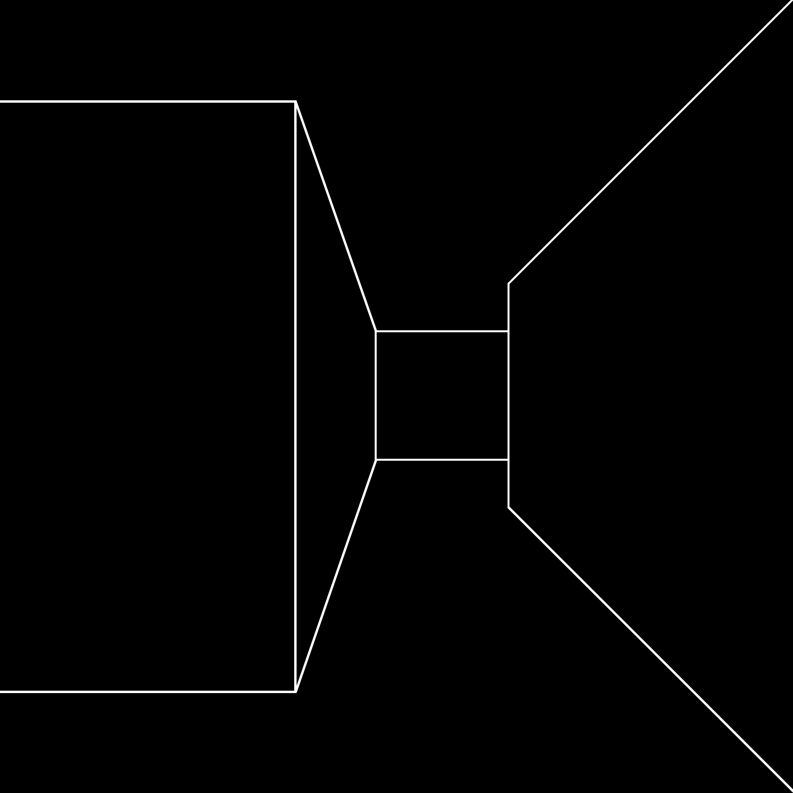

Everyone knows that if you query poets about how their poems begin, the answer is always the same: a phrase, a line, a scrap of language, a rhythm, an image, something seen, heard, witnessed, or imagined.
And the lesson is always the same, and young poets recognize this to be one of the most important lessons they can learn: if you have any idea for a poem, an exact grid of intent, you are on the wrong path,
a dead-end alley, at the top of a cliff you haven’t even climbed. This is a lesson that can only be learned by trial and error.